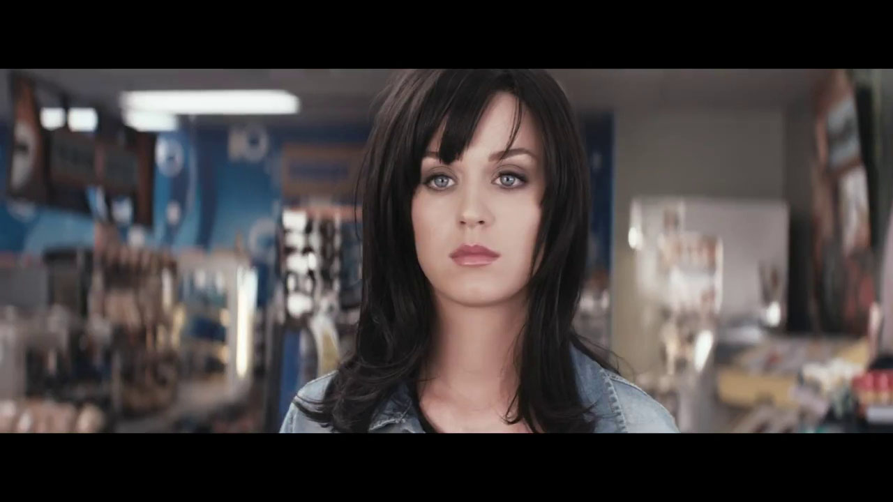

Katy Perry es una de las cantantes pop más icónicas de la actualidad, conocida por sus éxitos que
han encabezado las listas de popularidad en todo el mundo.
Es una cantante, compositora y personalidad televisiva estadounidense conocida por su estilo único
y su impacto en la industria musical.
| "Roar" | "Firework" | "Part Of Me" | "I Kissed a Girl" | "Teenage Dream" |
|---|---|---|---|---|
 |
||||
Un himno de empoderamiento que inspira a los oyentes a alzar la voz y reclamar su poder interior. |
Una canción que transmite un mensaje poderoso de autoempoderamiento y autoaceptación, convirtiéndose en un himno para muchos seguidores. |
Un canto de empoderamiento y resiliencia que habla sobre superar obstáculos y encontrar la fuerza interior. |
Una canción desafiante y pegadiza que causó revuelo y se convirtió en un himno para la liberación sexual. |
Una canción que captura la esencia de la juventud y el amor adolescente, convirtiéndose en un éxito instantáneo. |